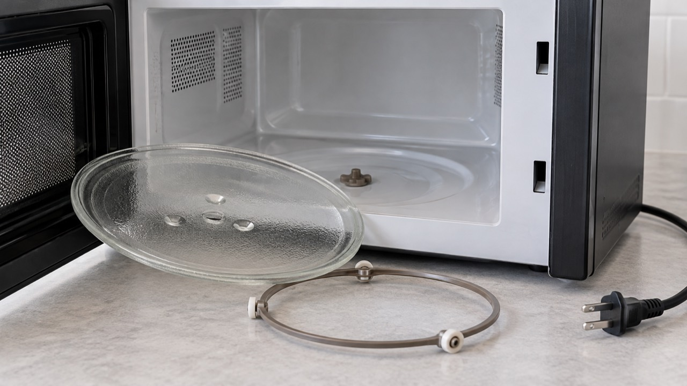

전자레인지 회전판이 안 돌면 유리판이 중심축에 맞지 않거나 회전 고리가 이물질에 걸린 경우부터 확인하세요. 내부 덮개를 열거나 모터를 직접 분해하면 감전 위험이 있으므로 사용자가 확인할 범위는 회전판·고리·용기 배치까지입니다.
회전 고리의 바퀴가 빠졌거나 유리판이 비뚤게 놓였을 수 있습니다. 금이 간 유리판은 계속 사용하지 말고 모델에 맞는 부품으로 교체하세요.
일부 모델은 회전 정지 기능을 지원할 수 있습니다. 설명서에서 기능 여부를 먼저 확인하세요. 기능이 아닌데 축이 돌지 않으면 모터나 구동부 점검이 필요할 수 있습니다.
불꽃이 튄다면 전자레인지 불꽃 발생 시 대처법을 먼저 확인하세요.
회전판과 고리를 정확히 장착했는데도 축이 움직이지 않거나 소음이 반복되면 플러그를 뽑고 모델명, 소리, 발생 시점을 기록해 제조사 점검을 받으세요.
LG전자 고객지원 등 사용 중인 제조사의 모델별 설명서에서 회전 정지 기능과 부품 장착법을 확인하세요.